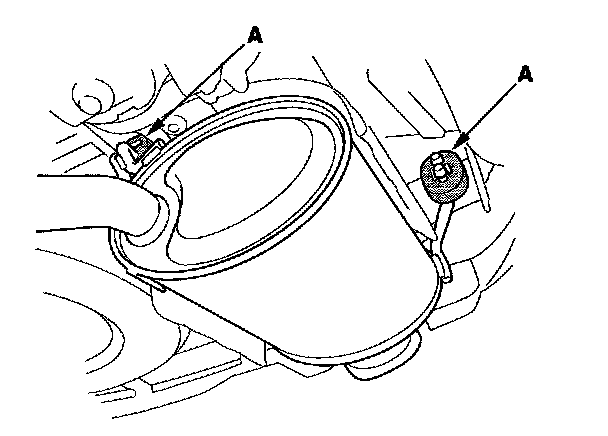
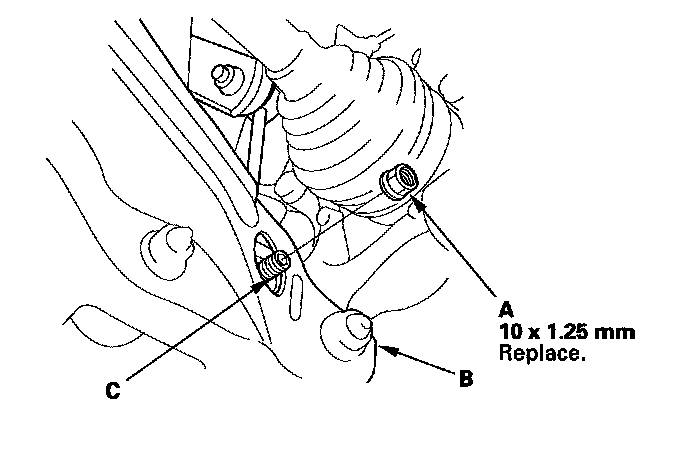
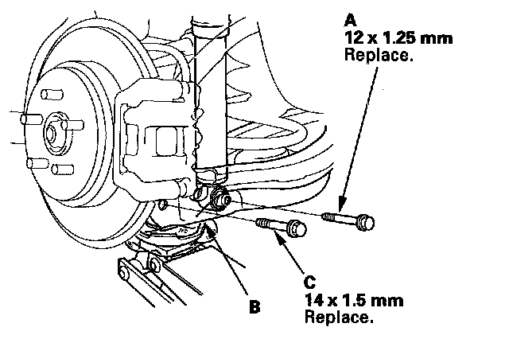
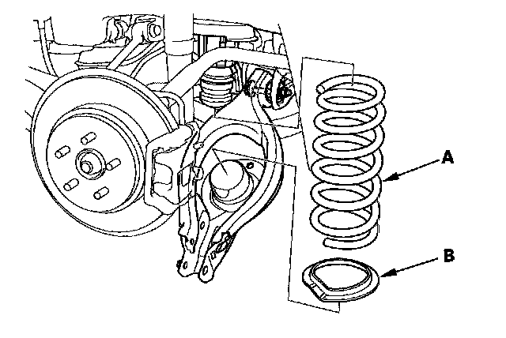
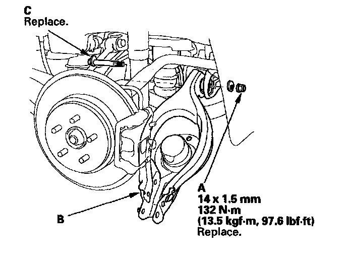

Lower Arm B Removal & Installation
Lower Arm B Removal/Installation1. Raise the rear of the vehicle, and support it with safety stands in the proper locations.
2. Remove the rear wheel.
3. Remove the muffler hanger (A).

4. Remove the flange nut (A) while holding the respective joint pin (C) with a hex wrench, then remove the stabilizer link from the lower arm B.

5. Position the floor jack under the lower arm B. Raise the floor jack until the suspension begins to compress.

6. Remove the flange bolt (A) from the bottom of the damper.
7. Remove the flange bolt (C) from the knuckle.
8. Lower the floor jack gradually.
9. Remove the spring (A) and the lower spring seat (B).

10. Remove the self-locking nut (A) and adjusting bolt (C) then remove the lower arm B.
NOTE: Use a new self-locking nut and a new adjusting bolt during reassembly.

11. Install the lower arm B in the reverse order of removal, and note these items:
^ First install all the suspension components, and lightly tighten the bolts and nuts, then place a floor jack under the lower arm, and raise the suspension to load it with the vehicle's weight before fully tightening the bolts and nuts to the specified torque values.
^ Align the cam positions of the adjusting bolt and the adjusting cam with the marked positions when tightening.
^ Before installing the brake disc/drum, clean the mating surface of the hub bearing unit and the inside of the brake disc/drum.
^ Check the wheel alignment, and adjust it if necessary.